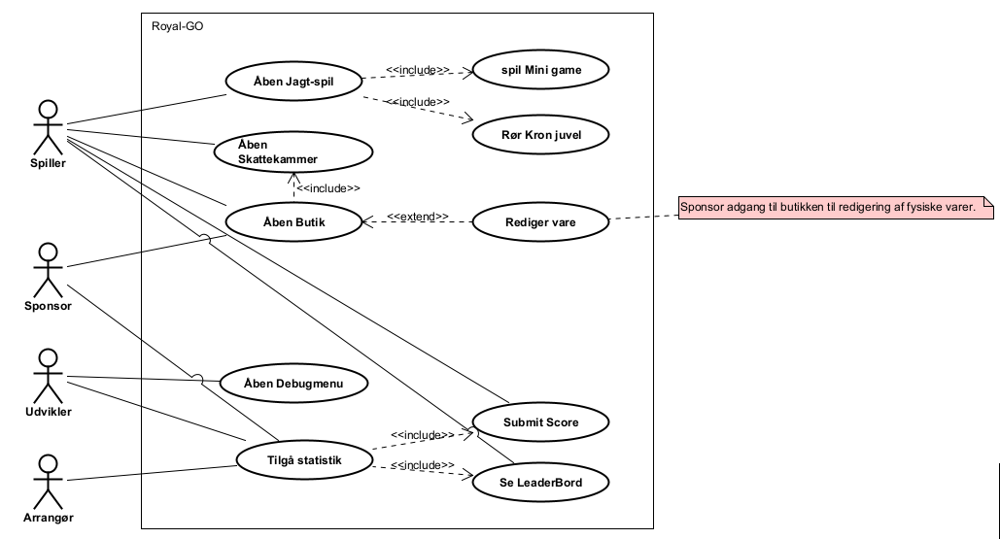
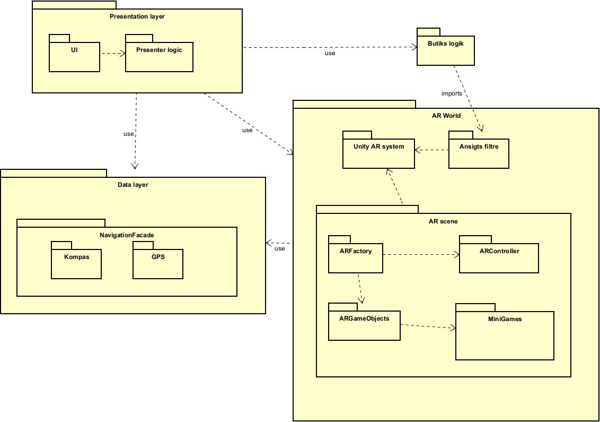

1. Resumé
Dette projekt omhandler udviklingen af en mobilapplikation, Royal GO, der benytter augmented reality (AR) til at fremme fysisk aktivitet blandt tilskuere til Royal Run 2025 i Viborg. Med afsæt i samfundsudfordringen om faldende fysisk aktivitet blandt unge og stigende mobilforbrug, undersøger projektet, hvordan AR og spildesignmekanismer – herunder kosmetiske belønninger – kan anvendes til at motivere brugerne til at bevæge sig. Projektet blev udviklet med Unity 6.3.6f1 i en SCRUM-baseret projektstruktur hvor resultatet er en AR-app, hvor brugeren opsøger virtuelle objekter i Viborgs byrum, spiller minispil og optjener in-game valuta til kosmetiske AR-effekter. Projektet viser, hvordan digitale oplevelser kan integreres i fysiske events og potentielt styrke bevægelse og social interaktion.
2. Indledning
Fysisk inaktivitet er et voksende problem i Danmark, især blandt unge, hvor mobiltelefoner og digitale medier i stigende grad optager fritiden. Organisationen “Bevæg dig for livet” har sat sig som mål at gøre Danmark til verdens mest aktive nation i 2025, bl.a. gennem events som Royal Run, som kombinerer motion med socialt fællesskab. Royal Run tiltrækker deltagere fra hele landet, men mange tilskuere forbliver passive observatører. Med udgangspunkt i dette identificerede vi et potentiale for at aktivere denne målgruppe gennem teknologisk innovation. Projektet tager derfor udgangspunkt i følgende problemformulering:
- Hvordan kan augmented reality bruges til at skabe en digital oplevelse af Royal Run?
- Hvordan kan augmented reality øge tilskuernes fysiske aktivitet?
- Hvad kan vi lære af Pokémon GO's brug af GPS til at skabe en interaktiv og sikker oplevelse?
Ved at kombinere fysiske bevægelsesaktiviteter med mobilbaseret AR og gamification-elementer, søger projektet at fremme bevægelse og engagement – især blandt unge.
3. Hovedafsnit
Metoder
Projektet anvendte en iterativ udviklingsmetode baseret på SCRUM, hvor arbejdet blev opdelt i sprints og organiseret gennem møder og sprint-backlogs. Sprintene havde en varighed på 3-4 dage og kørte regelmæssigt fra Mandag-Torsdag & Torsdag-Mandag. I løbet af disse sprints blev der holdt daglige scrum-møder hvor der blev lavet reviews og retrospection og snakket fælles om udfordringer / roadblocks. Gruppen valgte ikke at have en konstant product owner samt scrum master, men i stedet ved hver sprint planning at udnævne nye gruppemedlemmer til disse roller, for at alle får mulighed for den læringsoplevelse. De teknologiske valg blev truffet ud fra funktionalitetskrav og stabilitet, herunder brugen af Unity 6.3.6f1 som udviklingsplatform samt GitHub til versionsstyring og samarbejde.
Til udviklingen blev følgende metoder anvendt:
- Brug af user stories til behovsafdækning.
- Analyse af eksisterende AR-applikationer, f.eks Pokémon GO
- Design og kodning af en prototype i Unity med AR Foundation og GPS-integration.
- Test og løbende evaluering af funktionalitet og brugeroplevelse i byrum.
Projektaktiviteter
- Ideudvikling og problemfeltanalyse.
- Udarbejdelse af user stories og kravspecifikation.
- Teknologivalg og opsætning af Unity-projekt.
- Design og placering af virtuelle objekter i Viborg via GPS.
- Udvikling af minispil og belønningssystem og in-game valuta.
- Integration af AR-kamera og face filters.
- samarbejde via GitHub.
Resultater
Royal GO blev udviklet som en fuldt fungerende prototype, som integrerer følgende funktioner
- Virtuelle objekter (kronjuveler, kongekrone) placeret i Viborgs byrum baseret på GPS.
- Mini games, som skal gennemføres for at indsamle bestemte objekter.
- Belønningssystem med in-game valuta og kosmetiske effekter (face filters).
- Delingsfunktionalitet, hvor brugere kan tage billeder og dele deres oplevelser.
- AR-brugerflade, der kombinerer realtid video med virtuelle elementer.
er ikke sikker om Testpersonen kunne lide vores spil så jeg skæv bare noget
Resultatet viser, at det er muligt at kombinere fysisk bevægelse med digitale incitamenter og skabe en meningsfuld, interaktiv oplevelse. Testpersoner gav positiv feedback på brugervenlighed og appens underholdningsværdi.
Elaboration fase
Dokumentation af systemkrav
I forbindelse med dokumentationen af systemkravene til projektet blev der med udgangspunkt i de opstillede user stories udviklet et overordnet use case-diagram. (Se bilag XXX) Dette diagram havde til formål at give et struktureret overblik over systemets funktionalitet samt de forskellige aktørers interaktion med systemet. Gennem analysearbejdet blev der identificeret fire primære aktører: Spilleren, Sponsorer, Udviklere og Arrangører. Til disse aktører blev der knyttet i alt ni use cases, der repræsenterer centrale funktioner i applikationen. Fokus i elaboration-fasen blev lagt på at dokumentere hovedparten af disse use cases grundigt, da dette var essentielt for at opnå et fælles forståelsesgrundlag i gruppen, samt for at kunne danne en stærk arkitektonisk basis for den videre systemudvikling.
Uddybelse af Use cases
Efter fastlæggelsen af det overordnede use case-diagram blev næste skridt at foretage en systematisk og detaljeret analyse af de enkelte use cases. I denne proces blev det prioriteret at fokusere på de use cases, som involverer spilleren direkte, idet brugerens oplevelse og interaktion med spillet er det centrale mål af projektet. Det blev vurderet, at en dybdegående forståelse af disse funktioner var afgørende for at kunne træffe kvalificerede beslutninger vedrørende systemets design og implementering. Derimod blev visse use cases, såsom "Åben debugmenu" (Se bilag XXX), bevidst nedprioriteret i denne fase. Dette skyldes i dette eksempel, at funktionerne typisk først bliver relevante under selve udviklingen, hvor behovet for fejlsøgning og datavisualisering i systemet bliver tydeligere. På tilsvarende vis blev dokumentationen af use cases som "Submit Score" (Se bilag XXX) og "Se LeaderBord" (Se bilag XXX) udsat til construction-fasen, da disse funktionaliteter i højere grad blev vurderet som sekundære og først relevante i den senere del af projektets levetid hvis tid og resourcer tillod at implementere det. Beslutningen blev truffet ud fra en vurdering af opgavens samlede omfang og prioritering, med det formål at allokere udviklingsressourcerne mest hensigtsmæssigt.
Med henblik på at danne et grundlag for kodningen og implementationen af de valgte usecases under elaboration fasen blev en række af aktivitetsdiagrammer opsat. Heriblandt aktivitetsdiagrammet for usecaset "Åben Jagt-Spil", (Se bilag XXX & bilag XXX (Første er for use caset, andet for aktivitetsdiagrammet.)) som gruppen identificerede som værende kernedelen af projektet. Aktivitetsdiagrammet dækker over den endelige implementation og kodning skabt under elaboration fasen, som sammen med klassediagrammet (Se bilag XXX) dannede grundlag for opbygningen af systemet som skulle understøtte vores usecases.
Under udarbejdelsen af disse modeller blev det tydeligt, at visse tekniske aspekter, herunder realtidsopdatering af GPS-data og anvendelsen af plane detection til placering af AR-objekter, ikke var tilstrækkeligt afdækket i de oprindelige use case-beskrivelser. Elaborationsfasen gjorde det dermed muligt at klarlægge teknologiske krav, som ellers kunne være blevet overset, og som var afgørende for systemets funktionalitet.
Et system sequence diagram blev ligeledes udviklet for at skabe et mere præcist overblik over de dynamiske interaktioner mellem systemets komponenter, samt rækkefølgen hvori objekter og instanser oprettes og interagerer med hinanden. (Se bilag XXX) Diagrammet bidrog til at identificere nødvendige afhængigheder og databehov som yderligere hjælper med den fælles forståelse af omfanget samt funktionaliteten på projektet.
Strukturering af projektet
Inden implementationen og kodningen af kernedelen af spillet påbegyndtes blev et package diagram oprettet med henblik på at sikre en konkret struktur og arkitektur til projektets opbygning. (Se bilag XXX) Package diagrammet sikrer en dokumenteret struktur og giver yderligere indblik i de påkrævede systemer der skal til for at opfylde kravene specificeret fra use cases. Yderligere ved udarbejdelsen af diagrammet blev det på baggrund af single responsibility besluttet at dele håndteringen af GPS og AR-funktionaliteter i seperate moduler for at sikre vedligeholdelsen på den lange bane.
Dannelse af kerne-arkitektur og prototype
Elaborationsfasens sidste del fokuserede på implementeringen af det identificerede kernesystem, som skulle danne grundlaget for spillets centrale funktionalitet. Det indebar udvikling af systemer til behandling af GPS- og koordinatdata samt oprettelsen af funktionalitet til instansiering og håndtering af objekter i AR-verdenen. Resultatet var en funktionel prototype, der demonstrerede, hvordan "kronjuveler" kunne placeres i AR-verdenen og interageres med af spilleren, samtidig med at spillerens lokationsdata blev opsamlet og gemt i form af længde- og breddegrader. Denne prototype havde ikke kun til formål at verificere funktionaliteten, men tjente også som et vigtigt værktøj til at evaluere teknologivalg, systemarkitektur og arbejdsgange i Unity. Prototypen gav desuden gruppen et realistisk indblik i tidsforbruget ved implementering af diverse komponenter, hvilket viste sig at være afgørende i en mere realistisk og præcis planlægning af de kommende udviklingssprints.
Konklusion på elaboration-fasen
Elaboration-fasen spillede en essentiel rolle i at forme det endelige systemdesign og sikre, at gruppen havde et solidt teknisk og forståelsesmæssigt fundament for den videre udvikling. Gennem udvikling af modeller, prototyper og systembeskrivelser blev centrale krav til systemet gjordt konkrete. Fasen bekræftede de valgte teknologier og skabte en fælles forståelse for systemets opbygning. Med udgangspunkt i det arbejde, der blev udført i denne fase, stod gruppen med en forøget forståelse for omfanget af projektet, kravene bag og mængden af tid diverse opgaver fremadrettet bør tage.
4. Diskussion
Der er ikke nogle objektive resultater at diskutere, da der ikke er udført nogle test, eller indsamlet noget data i dette projekt. Ingen af de benyttede metoder i projektet har givet afkast i en objektiv indsigt, indenfor projektets rammer.
Der kan dog argumenteres at følgende problem formuleringen er besvaret : Hvordan kan augmented reality bruges til at skabe en digital oplevelse af Royal Run? Om svaret er positivt eller negativt er ikke til at sige. Men der eksistere nu, utvivlsomt, en digital oplevelse af Royal Run, der benytter argumentet reality. Det vil derfor for fremtiden være anbefalet at være opmærksom på denne slags formulering af problemer, hvor svaret faktisk vil være målbart.
Hvad kan vi lære af Pokémon GO's brug af GPS til at skabe en interaktiv oplevelse? Falder i samme kategori som forrige problemformulering, dog med større mulighed for at teste for objektive resultater. Man vil fx kunne opsætte en mindre spilgruppe, hvor man sammenligner deres spiloplevelser i de to spil. Her vil man gennem kvalitative interviews og målinger af fx bevægelser, hjerterymt og antal interaktioner, kunne besvare på om Royal Go har kunnet implementere ligneden effekter som Pokémon GO.
For den resterende problemformuleringer: Hvordan kan augmented reality øge tilskuernes fysiske aktivitet? Er det ikke muligt at påvise nogle ændringer i tilskuernes fysiske aktivitet, uden at indsamle data.
For at afdække, og undgå, de svagheder der måtte have opstået i dette projekt, vil en anbefaling være at teste effekten, og / eller indsamle data om projektets indflydelse. Eksempler sådanne metoder vil kunne deles op i to kategorier: før debut på Royal Run, og under Royal Run. Hvis der testes inden begivenheden, vil mindre, men kvalitative, test være anbefalet, hvor, hvis det derimod er under Royal Run vil flere test af kvantitativ natur være oplagt.
Før debuten af Royal GO vil små sessioner med et lille hold spil testere være anbefalet. Her er der mulighed for at observere deres opførsel, reaktioner, samt diskutere deres oplevelse mere i dybden. Deres indsigt vil være af høj kvalitet, og der er tid og plads til fordybelse.
Efter debut til Royal Run, vil spørgeskemaer, eller data indsamling gennem app’en være oplagte metoder. Der er dog den klare ulempe ved data indsamlingen at der er en mængde juridiske og moralske overvejelser man skal gøre sig når man arbejder med spil til børn. Det vil derfor anbefales at bruge et spørgeskema til at indsamle data.
5. Konklusion og anbefalinger
Projektet har vist, at det er muligt at udvikle en AR-applikation, der understøtter fysisk aktivitet og engagement gennem spildesign og sociale interaktioner. Royal GO integrerer GPS, AR og belønningsmekanismer i en brugercentreret løsning, som kan være med til at aktivere passive tilskuere og dermed støtte initiativer som Bevæg dig for livet.
Anbefalinger til fremtidige projekter:
- Inkluder tidlig brugerinddragelse gennem interviews eller observationer.
- Undersøg effektmåling af fysisk aktivitet via skridttællere eller lignende.
- Arbejd med datasikkerhed og brugersamtykke fra starten.
6. Referencer
[Indsæt din tekst her]